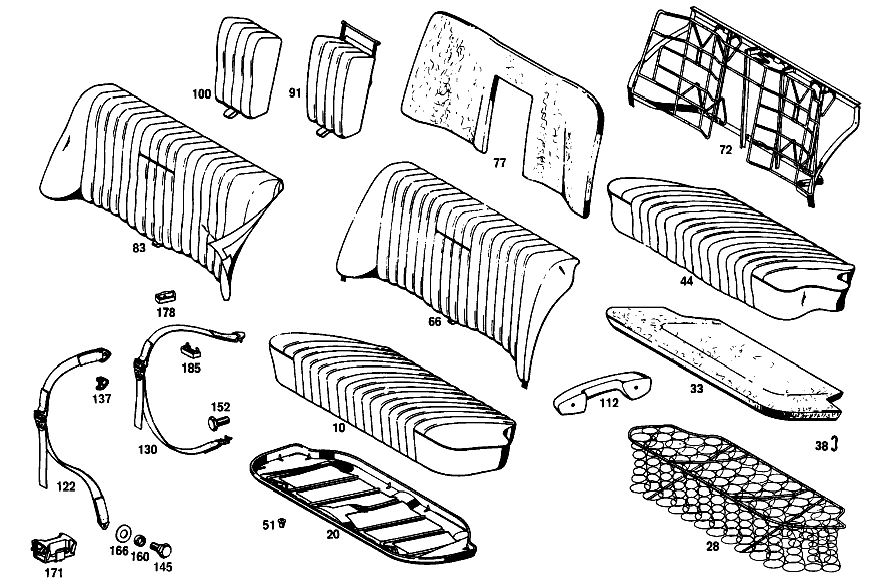

| № | Артикул | Название | Кол. | Примечание | Ограничение |
|---|---|---|---|---|---|
| 10 | A 111 920 07 20 | ПОДУШКИ ЗАДНИХ СИДЕНИЙ | 1 | ТКАНЬ ОБИВКИ [402] БОЛЬШЕ НЕ ПОСТАВЛЯЕТСЯ [001] STATE COLOR AND CHASSIS NO.WHEN ORDERING | |
| 20 | A 110 920 00 22 | - РАМА ПОДУШКИ | - | ||
| 20 | A 108 920 01 22 | - РАМА ПОДУШКИ | - | ||
| 20 | A 108 920 03 22 | - РАМА ПОДУШКИ | 1 | ||
| 28 | A 110 920 13 40 | - КОРОБ ПРУЖИНЫ | 1 | ||
| 33 | A 111 924 00 14 | - НАКЛАДКА | 1 | [402] БОЛЬШЕ НЕ ПОСТАВЛЯЕТСЯ | |
| 38 | A 000 984 20 61 | - Скоба | 24 | ||
| 44 | A 111 920 00 46 | - ОБИВКА | 1 | ТКАНЬ ОБИВКИ [402] БОЛЬШЕ НЕ ПОСТАВЛЯЕТСЯ | |
| 51 | A 000 997 65 81 | КАБ. ВТУЛКА | 4 | ЗАДН. ПОДУШКА НА ПОЛУ | |
| 66 | A 111 920 02 30 | СПИНКА СИДЕНЬЯ | 1 | с FOLDING ARMREST; FABRIC [402] БОЛЬШЕ НЕ ПОСТАВЛЯЕТСЯ | |
| 72 | A 111 920 00 34 | - РАМА СПИНКИ | 1 | ||
| 77 | A 111 924 00 16 | - НАКЛАДКА | 1 | ||
| 83 | A 111 920 01 47 | - ОБИВКА | 1 | ТКАНЬ ОБИВКИ [402] БОЛЬШЕ НЕ ПОСТАВЛЯЕТСЯ | |
| 91 | A 111 970 03 30 | - ПОДЛОКОТНИК ОТКИДН. | 1 | ТКАНЬ ОБИВКИ [402] БОЛЬШЕ НЕ ПОСТАВЛЯЕТСЯ | |
| 100 | A 111 970 00 47 | - ОБИВКА | 1 | ТКАНЬ ОБИВКИ [402] БОЛЬШЕ НЕ ПОСТАВЛЯЕТСЯ | |
| 112 | A 112 970 03 01 | ПОДЛОКОТНИК | - | [415] ПРИМЕЧ. ПО ЗАМЕНЕ ПРИМЕНИМО ТОЛЬКО ДЛЯ СТОЯЩИХ РЯДОМ ПОЗИЦИЙ | |
| 112 | A 110 970 07 01 | ПОДЛОКОТНИК | 2 | СЛЕВА [013] FROM CHASSIS 010860 | |
| 122 | A 110 860 12 85 | РЕМЕНЬ БЕЗОПАСНОСТИ | 2 | СИДЕНЬЕ ВОДИТЕЛЯ [402] БОЛЬШЕ НЕ ПОСТАВЛЯЕТСЯ [022] ON SPECIAL REQUEST [016] FROM CHASSIS 021346 INSTALLED ON 021329,021330,021343,021344 | |
| 130 | A 110 860 13 85 | РЕМЕНЬ БЕЗОПАСНОСТИ | 2 | ЗАДНЕЕ СИДЕНЬЕ [022] ON SPECIAL REQUEST [016] FROM CHASSIS 021346 INSTALLED ON 021329,021330,021343,021344 | |
| 137 | A 113 868 00 30 | - КОЛПАЧОК | 4 | [402] БОЛЬШЕ НЕ ПОСТАВЛЯЕТСЯ [022] ON SPECIAL REQUEST [018] FROM CHASSIS 054172 | |
| 145 | A 000 984 07 33 | - БОЛТ | - | ||
| 145 | A 000 984 10 33 | - БОЛТ | 4 | СИДЕНЬЕ ВОДИТЕЛЯ 7/16" [022] ON SPECIAL REQUEST [018] FROM CHASSIS 054172 | |
| 152 | A 001 990 87 01 | - БОЛТ | 2 | ЗАДНЕЕ СИДЕНЬЕ 7/16" [022] ON SPECIAL REQUEST [018] FROM CHASSIS 054172 | |
| 160 | A 000 991 00 35 | - ДИСТАНЦИОННОЕ КОЛЬЦО | 4 | [022] ON SPECIAL REQUEST [018] FROM CHASSIS 054172 | |
| 166 | A 001 990 02 40 | - ШАЙБА | 4 | [022] ON SPECIAL REQUEST [018] FROM CHASSIS 054172 | |
| 171 | A 110 860 02 14 | - ДЕРЖАТЕЛЬ | 2 | РЕМЕНЬ БЕЗОПАСНОСТИ [022] ON SPECIAL REQUEST [029] FROM CHASSIS 062085 | |
| 178 | A 000 868 00 32 | - СКОБА | 2 | ЗАДНЯЯ ЧАСТЬ КУЗОВА [022] ON SPECIAL REQUEST [018] FROM CHASSIS 054172 | |
| 185 | A 000 868 01 32 | - СКОБА | 2 | РЕМЕНЬ БЕЗОПАСНОСТИ [022] ON SPECIAL REQUEST [018] FROM CHASSIS 054172 | |
| A 111 920 01 20 | ПОДУШКИ ЗАДНИХ СИДЕНИЙ | - | |||
| A 111 920 06 20 | ПОДУШКИ ЗАДНИХ СИДЕНИЙ | 1 | КОЖ. ОБИВКА [402] БОЛЬШЕ НЕ ПОСТАВЛЯЕТСЯ [001] STATE COLOR AND CHASSIS NO.WHEN ORDERING [002] UP TO CHASSIS 038546 | ||
| A 111 920 09 20 | ПОДУШКИ ЗАДНИХ СИДЕНИЙ | - | КОЖ. ОБИВКА [403] НЕ УСТАНОВЛЕНО | ||
| A 111 920 12 20 | ПОДУШКИ ЗАДНИХ СИДЕНИЙ | 1 | LEATHER,PERFORATED [402] БОЛЬШЕ НЕ ПОСТАВЛЯЕТСЯ [001] STATE COLOR AND CHASSIS NO.WHEN ORDERING [003] FROM CHASSIS 038547-056739 | ||
| A 111 920 16 20 | ПОДУШКИ ЗАДНИХ СИДЕНИЙ | 1 | LEATHER,PERFORATED [402] БОЛЬШЕ НЕ ПОСТАВЛЯЕТСЯ [001] STATE COLOR AND CHASSIS NO.WHEN ORDERING [004] FROM CHASSIS 056740 | ||
| A 111 920 03 20 | ПОДУШКИ ЗАДНИХ СИДЕНИЙ | 1 | ИСКУССТВ. КОЖА [402] БОЛЬШЕ НЕ ПОСТАВЛЯЕТСЯ [001] STATE COLOR AND CHASSIS NO.WHEN ORDERING [005] UP TO CHASSIS 023767 | ||
| A 111 920 11 20 | ПОДУШКИ ЗАДНИХ СИДЕНИЙ | 1 | ИСКУССТВ. КОЖА [402] БОЛЬШЕ НЕ ПОСТАВЛЯЕТСЯ [001] STATE COLOR AND CHASSIS NO.WHEN ORDERING [006] FROM CHASSIS 023768-054449 | ||
| A 111 920 17 20 | ПОДУШКИ ЗАДНИХ СИДЕНИЙ | 1 | ИСКУССТВ. КОЖА [402] БОЛЬШЕ НЕ ПОСТАВЛЯЕТСЯ [001] STATE COLOR AND CHASSIS NO.WHEN ORDERING [007] FROM CHASSIS 054450-063006 | ||
| A 111 920 18 20 | ПОДУШКИ ЗАДНИХ СИДЕНИЙ | 1 | ИСКУССТВ. КОЖА [402] БОЛЬШЕ НЕ ПОСТАВЛЯЕТСЯ [001] STATE COLOR AND CHASSIS NO.WHEN ORDERING [008] FROM CHASSIS 063007 | ||
| A 111 920 10 20 | ПОДУШКИ ЗАДНИХ СИДЕНИЙ | - | ИСКУССТВ. КОЖА [403] НЕ УСТАНОВЛЕНО | ||
| A 110 922 02 01 | - ЧАСТЬ РАМЫ | - | [403] НЕ УСТАНОВЛЕНО | ||
| A 110 920 01 40 | - КОРОБ ПРУЖИНЫ | - | [403] НЕ УСТАНОВЛЕНО | ||
| A 110 920 00 40 | - КОРОБ ПРУЖИНЫ | - | |||
| A 110 920 07 40 | - КОРОБ ПРУЖИНЫ | - | |||
| A 110 924 00 14 | - НАКЛАДКА | - | |||
| A 110 920 03 46 | - ОБИВКА | 1 | КОЖ. ОБИВКА [402] БОЛЬШЕ НЕ ПОСТАВЛЯЕТСЯ [002] UP TO CHASSIS 038546 | ||
| A 110 920 16 46 | - ОБИВКА | 1 | LEATHER,PERFORATED [402] БОЛЬШЕ НЕ ПОСТАВЛЯЕТСЯ [003] FROM CHASSIS 038547-056739 | ||
| A 110 920 21 46 | - ОБИВКА | 1 | LEATHER,PERFORATED [402] БОЛЬШЕ НЕ ПОСТАВЛЯЕТСЯ [004] FROM CHASSIS 056740 | ||
| A 111 920 04 46 | - ОБИВКА | 1 | ИСКУССТВ. КОЖА [402] БОЛЬШЕ НЕ ПОСТАВЛЯЕТСЯ [005] UP TO CHASSIS 023767 | ||
| A 111 920 10 46 | - ОБИВКА | 1 | ИСКУССТВ. КОЖА [402] БОЛЬШЕ НЕ ПОСТАВЛЯЕТСЯ [006] FROM CHASSIS 023768-054449 | ||
| A 111 920 17 46 | - ОБИВКА | 1 | ИСКУССТВ. КОЖА [402] БОЛЬШЕ НЕ ПОСТАВЛЯЕТСЯ [007] FROM CHASSIS 054450-063006 | ||
| A 110 920 22 46 | - ОБИВКА | 1 | ИСКУССТВ. КОЖА [402] БОЛЬШЕ НЕ ПОСТАВЛЯЕТСЯ [008] FROM CHASSIS 063007 | ||
| A 111 920 00 02 | НАКЛАДКА ПОДУШКИ СИДЕНЬЯ | - | |||
| A 110 920 01 02 | НАКЛАДКА ПОДУШКИ СИДЕНЬЯ | 1 | |||
| A 111 920 06 30 | СПИНКА СИДЕНЬЯ | 1 | с FOLDING ARMREST; LEATHER [402] БОЛЬШЕ НЕ ПОСТАВЛЯЕТСЯ [002] UP TO CHASSIS 038546 | ||
| A 111 920 13 30 | СПИНКА СИДЕНЬЯ | 1 | с FOLDING ARMREST; PERFORATED LEATHER [402] БОЛЬШЕ НЕ ПОСТАВЛЯЕТСЯ [003] FROM CHASSIS 038547-056739 | ||
| A 111 920 17 30 | СПИНКА СИДЕНЬЯ | 1 | с FOLDING ARMREST; PERFORATED LEATHER [402] БОЛЬШЕ НЕ ПОСТАВЛЯЕТСЯ [004] FROM CHASSIS 056740 | ||
| A 111 920 07 30 | СПИНКА СИДЕНЬЯ | 1 | с FOLDING ARMREST;IMITATION LEATHER [402] БОЛЬШЕ НЕ ПОСТАВЛЯЕТСЯ [009] UP TO CHASSIS 054449 | ||
| A 111 920 18 30 | СПИНКА СИДЕНЬЯ | 1 | с FOLDING ARMREST;IMITATION LEATHER [402] БОЛЬШЕ НЕ ПОСТАВЛЯЕТСЯ [007] FROM CHASSIS 054450-063006 | ||
| A 111 920 19 30 | СПИНКА СИДЕНЬЯ | 1 | с FOLDING ARMREST;IMITATION LEATHER [402] БОЛЬШЕ НЕ ПОСТАВЛЯЕТСЯ [008] FROM CHASSIS 063007 | ||
| A 111 920 03 04 | НАКЛАДКА СПИНКИ | 1 | с FOLDING ARMREST;IMITATION LEATHER [008] FROM CHASSIS 063007 | ||
| A 111 920 01 04 | НАКЛАДКА СПИНКИ | 1 | |||
| A 111 920 02 04 | НАКЛАДКА СПИНКИ | 1 | с CENTRAL FOLDING ARMREST | ||
| A 000 984 20 61 | - Скоба | 36 | |||
| A 111 920 10 47 | - ОБИВКА | 1 | КОЖ. ОБИВКА [402] БОЛЬШЕ НЕ ПОСТАВЛЯЕТСЯ [002] UP TO CHASSIS 038546 | ||
| A 111 920 19 47 | - ОБИВКА | 1 | LEATHER,PERFORATED [402] БОЛЬШЕ НЕ ПОСТАВЛЯЕТСЯ [003] FROM CHASSIS 038547-056739 | ||
| A 111 920 22 47 | - ОБИВКА | 1 | LEATHER,PERFORATED [402] БОЛЬШЕ НЕ ПОСТАВЛЯЕТСЯ [004] FROM CHASSIS 056740 | ||
| A 111 920 11 47 | - ОБИВКА | 1 | ИСКУССТВ. КОЖА [402] БОЛЬШЕ НЕ ПОСТАВЛЯЕТСЯ [009] UP TO CHASSIS 054449 | ||
| A 111 920 23 47 | - ОБИВКА | 1 | ИСКУССТВ. КОЖА [402] БОЛЬШЕ НЕ ПОСТАВЛЯЕТСЯ [007] FROM CHASSIS 054450-063006 | ||
| A 111 920 24 47 | - ОБИВКА | 1 | ИСКУССТВ. КОЖА [402] БОЛЬШЕ НЕ ПОСТАВЛЯЕТСЯ [008] FROM CHASSIS 063007 | ||
| A 000 988 27 78 | - Скоба | 26 | СПИНКА ЗАДНЯЯ [010] UP TO CHASSIS 052410 | ||
| A 001 988 76 78 | - Скоба | 16 | СПИНКА ЗАДНЯЯ [010] UP TO CHASSIS 052410 | ||
| A 000 984 20 61 | - Скоба | 6 | |||
| A 111 970 16 30 | - ПОДЛОКОТНИК ОТКИДН. | 1 | КОЖ. ОБИВКА [402] БОЛЬШЕ НЕ ПОСТАВЛЯЕТСЯ [011] UP TO CHASSIS 056739 | ||
| A 111 970 31 30 | - ПОДЛОКОТНИК ОТКИДН. | 1 | КОЖ. ОБИВКА [402] БОЛЬШЕ НЕ ПОСТАВЛЯЕТСЯ [004] FROM CHASSIS 056740 | ||
| A 111 970 17 30 | - ПОДЛОКОТНИК ОТКИДН. | 1 | ИСКУССТВ. КОЖА [402] БОЛЬШЕ НЕ ПОСТАВЛЯЕТСЯ [009] UP TO CHASSIS 054449 | ||
| A 111 970 32 30 | - ПОДЛОКОТНИК ОТКИДН. | 1 | ИСКУССТВ. КОЖА [402] БОЛЬШЕ НЕ ПОСТАВЛЯЕТСЯ [007] FROM CHASSIS 054450-063006 | ||
| A 111 970 33 30 | - ПОДЛОКОТНИК ОТКИДН. | 1 | ИСКУССТВ. КОЖА [402] БОЛЬШЕ НЕ ПОСТАВЛЯЕТСЯ [008] FROM CHASSIS 063007 | ||
| A 111 970 35 30 | - ПОДЛОКОТНИК ОТКИДН. | 1 | COMPLETE, BUT LESS COVER [008] FROM CHASSIS 063007 | ||
| A 111 970 28 30 | - ПОДЛОКОТНИК ОТКИДН. | - | |||
| A 111 970 71 30 | ПОДЛОКОТНИК ОТКИДН. | 1 | COMPLETE, BUT LESS COVER | ||
| A 111 970 10 47 | - ОБИВКА | 1 | КОЖ. ОБИВКА [402] БОЛЬШЕ НЕ ПОСТАВЛЯЕТСЯ [011] UP TO CHASSIS 056739 | ||
| A 111 970 16 47 | - ОБИВКА | 1 | КОЖ. ОБИВКА [402] БОЛЬШЕ НЕ ПОСТАВЛЯЕТСЯ [004] FROM CHASSIS 056740 | ||
| A 111 970 11 47 | - ОБИВКА | 1 | ИСКУССТВ. КОЖА [402] БОЛЬШЕ НЕ ПОСТАВЛЯЕТСЯ [009] UP TO CHASSIS 054449 | ||
| A 111 970 17 47 | - ОБИВКА | 1 | ИСКУССТВ. КОЖА [402] БОЛЬШЕ НЕ ПОСТАВЛЯЕТСЯ [007] FROM CHASSIS 054450-063006 | ||
| A 111 970 18 47 | - ОБИВКА | 1 | ИСКУССТВ. КОЖА [008] FROM CHASSIS 063007 | ||
| N 006799 004001 | - Стопорная шайба | 4 | HINGE TO REAR SEAT BENCH BACKREST | ||
| N 000433 006405 | - Шайба | 2 | HINGE TO UPHOLSTERY PANEL | ||
| N 000137 006204 | - Пружинная шайба | 2 | HINGE TO UPHOLSTERY PANEL | ||
| A 000 990 01 48 | Диск | 2 | REAR BACKREST TO REAR BODY PANEL | ||
| N 000934 006007 | Гайка | 2 | REAR BACKREST TO REAR BODY PANEL | ||
| N 000933 006121 | Винт | - | |||
| N 304017 006020 | Винт с 6-гранной головкой | 2 | REAR BACKREST TO WHEELHOUSE PANEL; M6X20 | ||
| N 009021 006103 | Шайба | - | |||
| N 009021 006208 | Шайба | 2 | REAR BACKREST TO WHEELHOUSE PANEL; 6 MM | ||
| N 000137 006204 | Пружинная шайба | 2 | REAR BACKREST TO WHEELHOUSE PANEL | ||
| A 000 987 15 41 | КОЛЬЦО РЕЗИНОВОЕ | - | |||
| A 000 987 38 41 | КОЛЬЦО РЕЗИНОВОЕ | 2 | REAR BACKREST TO WHEELHOUSE PANEL | ||
| A 000 990 01 48 | Диск | 2 | REAR BACKREST TO WHEELHOUSE PANEL | ||
| N 000934 006007 | Гайка | 2 | REAR BACKREST TO WHEELHOUSE PANEL | ||
| A 110 970 03 01 | ПОДЛОКОТНИК | - | [415] ПРИМЕЧ. ПО ЗАМЕНЕ ПРИМЕНИМО ТОЛЬКО ДЛЯ СТОЯЩИХ РЯДОМ ПОЗИЦИЙ | ||
| A 110 970 05 01 | ПОДЛОКОТНИК | - | [415] ПРИМЕЧ. ПО ЗАМЕНЕ ПРИМЕНИМО ТОЛЬКО ДЛЯ СТОЯЩИХ РЯДОМ ПОЗИЦИЙ | ||
| A 112 970 03 01 | ПОДЛОКОТНИК | - | [415] ПРИМЕЧ. ПО ЗАМЕНЕ ПРИМЕНИМО ТОЛЬКО ДЛЯ СТОЯЩИХ РЯДОМ ПОЗИЦИЙ | ||
| A 110 970 07 01 | ПОДЛОКОТНИК | 2 | СЛЕВА [012] UP TO CHASSIS 010859 | ||
| A 110 970 04 01 | ПОДЛОКОТНИК | - | |||
| A 110 970 06 01 | ПОДЛОКОТНИК | - | [415] ПРИМЕЧ. ПО ЗАМЕНЕ ПРИМЕНИМО ТОЛЬКО ДЛЯ СТОЯЩИХ РЯДОМ ПОЗИЦИЙ | ||
| A 112 970 04 01 | ПОДЛОКОТНИК | - | [415] ПРИМЕЧ. ПО ЗАМЕНЕ ПРИМЕНИМО ТОЛЬКО ДЛЯ СТОЯЩИХ РЯДОМ ПОЗИЦИЙ | ||
| A 110 970 08 01 | ПОДЛОКОТНИК | 2 | СПРАВА [012] UP TO CHASSIS 010859 | ||
| A 112 970 04 01 | ПОДЛОКОТНИК | - | [415] ПРИМЕЧ. ПО ЗАМЕНЕ ПРИМЕНИМО ТОЛЬКО ДЛЯ СТОЯЩИХ РЯДОМ ПОЗИЦИЙ | ||
| A 110 970 08 01 | ПОДЛОКОТНИК | 2 | СПРАВА [013] FROM CHASSIS 010860 | ||
| N 007987 006134 | БОЛТ | 8 | ПОДЛОКОТНИК НА ДВЕРИ | ||
| A 000 990 41 91 | ГАЙКОДЕРЖАТЕЛЬ | - | [415] ПРИМЕЧ. ПО ЗАМЕНЕ ПРИМЕНИМО ТОЛЬКО ДЛЯ СТОЯЩИХ РЯДОМ ПОЗИЦИЙ | ||
| A 000 990 83 91 | ГАЙКОДЕРЖАТЕЛЬ | - | |||
| A 000 990 71 91 | Гайкодержатель | 8 | ПОДЛОКОТНИК НА ДВЕРИ | ||
| H 40 121 860 00 85 | РЕМЕНЬ БЕЗОПАСНОСТИ | - | |||
| H 40 121 860 00 85 | РЕМЕНЬ БЕЗОПАСНОСТИ | - | |||
| A 110 860 00 85 | РЕМЕНЬ БЕЗОПАСНОСТИ | - | |||
| H 10 180 868 03 14 | ДЕРЖАТЕЛЬ | 1 | SEAT BELTS,LEFT [014] UP TO CHASSIS 011974 [022] ON SPECIAL REQUEST | ||
| H 10 180 868 04 14 | ДЕРЖАТЕЛЬ | 1 | SEAT BELTS,RIGHT [014] UP TO CHASSIS 011974 [022] ON SPECIAL REQUEST | ||
| A 110 868 03 11 | ПЛАСТИНА | - | [402] БОЛЬШЕ НЕ ПОСТАВЛЯЕТСЯ [014] UP TO CHASSIS 011974 | ||
| A 110 868 02 11 | ПЛАСТИНА | - | [402] БОЛЬШЕ НЕ ПОСТАВЛЯЕТСЯ [014] UP TO CHASSIS 011974 | ||
| N 000091 008209 | БОЛТ | 2 | СТОЙКА СРЕДНЯЯ [014] UP TO CHASSIS 011974 [022] ON SPECIAL REQUEST | ||
| N 000127 008201 | КОЛЬЦО ПРУЖИННОЕ | 2 | СТОЙКА СРЕДНЯЯ [014] UP TO CHASSIS 011974 [022] ON SPECIAL REQUEST | ||
| N 000917 008002 | ГАЙКА | 2 | СТОЙКА СРЕДНЯЯ [014] UP TO CHASSIS 011974 [022] ON SPECIAL REQUEST | ||
| N 000931 008007 | БОЛТ | 2 | SAFETY BELT TO TUNNEL [014] UP TO CHASSIS 011974 [022] ON SPECIAL REQUEST | ||
| A 110 868 01 11 | ПЛАСТИНА | 1 | SAFETY BELT TO TUNNEL [014] UP TO CHASSIS 011974 [022] ON SPECIAL REQUEST | ||
| N 000127 008200 | КОЛЬЦО ПРУЖИННОЕ | 2 | SAFETY BELT TO TUNNEL [014] UP TO CHASSIS 011974 [022] ON SPECIAL REQUEST | ||
| N 000934 008010 | Гайка | - | |||
| N 304032 008006 | Шестигранная гайка | 2 | SAFETY BELT TO TUNNEL; M8 [014] UP TO CHASSIS 011974 [022] ON SPECIAL REQUEST | ||
| H 40 121 868 01 32 | СКОБА | 2 | ЗАДНЕЕ СИДЕНЬЕ [014] UP TO CHASSIS 011974 [022] ON SPECIAL REQUEST | ||
| H 40 121 868 02 32 | СКОБА | 2 | ЗАДНЕЕ СИДЕНЬЕ [014] UP TO CHASSIS 011974 [022] ON SPECIAL REQUEST | ||
| H 40 121 868 00 11 | ПЛАСТИНА | 1 | ЗАДНЕЕ СИДЕНЬЕ [014] UP TO CHASSIS 011974 [022] ON SPECIAL REQUEST | ||
| A 110 868 00 11 | ПЛАСТИНА | 1 | ЗАДНЕЕ СИДЕНЬЕ [014] UP TO CHASSIS 011974 [022] ON SPECIAL REQUEST | ||
| N 000931 008036 | БОЛТ | 4 | ЗАДНЕЕ СИДЕНЬЕ [014] UP TO CHASSIS 011974 [022] ON SPECIAL REQUEST | ||
| N 000127 008200 | КОЛЬЦО ПРУЖИННОЕ | 4 | ЗАДНЕЕ СИДЕНЬЕ [014] UP TO CHASSIS 011974 [022] ON SPECIAL REQUEST | ||
| N 000934 008010 | Гайка | - | |||
| N 304032 008006 | Шестигранная гайка | 4 | ЗАДНЕЕ СИДЕНЬЕ; M8 [014] UP TO CHASSIS 011974 [022] ON SPECIAL REQUEST | ||
| A 110 860 04 85 | РЕМЕНЬ БЕЗОПАСНОСТИ | 2 | СИДЕНЬЕ ВОДИТЕЛЯ [402] БОЛЬШЕ НЕ ПОСТАВЛЯЕТСЯ [022] ON SPECIAL REQUEST [015] FROM CHASSIS 011975-021345 | ||
| A 110 860 05 85 | РЕМЕНЬ БЕЗОПАСНОСТИ | 2 | ЗАДНЕЕ СИДЕНЬЕ [022] ON SPECIAL REQUEST [015] FROM CHASSIS 011975-021345 | ||
| A 110 860 06 85 | РЕМЕНЬ БЕЗОПАСНОСТИ | - | |||
| A 110 860 08 85 | РЕМЕНЬ БЕЗОПАСНОСТИ | - | |||
| A 110 860 07 85 | РЕМЕНЬ БЕЗОПАСНОСТИ | - | |||
| A 110 860 09 85 | РЕМЕНЬ БЕЗОПАСНОСТИ | - | |||
| A 110 868 00 30 | - КОЛПАЧОК | 4 | [022] ON SPECIAL REQUEST [017] FROM CHASSIS 021346-054171 | ||
| A 110 868 00 31 | - КОНСОЛЬ | - | [402] БОЛЬШЕ НЕ ПОСТАВЛЯЕТСЯ | ||
| A 110 990 15 40 | - ШАЙБА | - | [402] БОЛЬШЕ НЕ ПОСТАВЛЯЕТСЯ | ||
| A 000 987 21 41 | - Эластомерная шайба | - | [415] ПРИМЕЧ. ПО ЗАМЕНЕ ПРИМЕНИМО ТОЛЬКО ДЛЯ СТОЯЩИХ РЯДОМ ПОЗИЦИЙ | ||
| A 000 984 08 33 | - БОЛТ | - | |||
| A 000 984 10 33 | - БОЛТ | - | [402] БОЛЬШЕ НЕ ПОСТАВЛЯЕТСЯ | ||
| A 000 868 02 32 | СКОБА | 1 | |||
| A 000 868 01 34 | ПРУЖИНА | 4 | |||
| N 000933 010028 | Винт | 2 | |||
| A 000 984 09 32 | БОЛТ | 4 | |||
| A 000 868 03 32 | СКОБА | 4 | [402] БОЛЬШЕ НЕ ПОСТАВЛЯЕТСЯ [001] STATE COLOR AND CHASSIS NO.WHEN ORDERING |
Позиций: 152 · подписано на схемах: 28 · колесо — плавный зум в курсор, перетаскивание — пан, двойной клик — зум, клик по артикулу — скопировать.